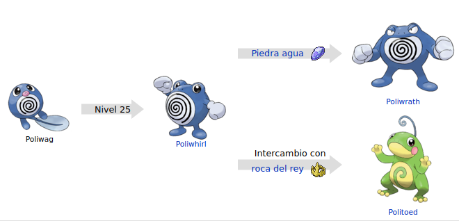

Poliwag (ニョロモ Nyoromo en japonés) es un Pokémon de tipo agua introducido en la primera generación.
Este contenido proviene de wikidex.net, y debe darse atribución a sus autores, tal como especifica la licencia.

Evoluciones de Poliwag
Su nombre proviene de las palabras en inglés polliwog (palabra en desuso para referirse a renacuajo) y wag (menear).
Su nombre japonés, Nyoromo, procede de ニョロニョロ nyoronyoro (el sonido de una animal al reptar) y 子供 kodomo (niño).
Su nombre francés, Ptitard, proviene de las palabras francesas petit (pequeño) ' y têtard (renacuajo).
Poliwag tiene el aspecto de un renacuajo incompleto azulado, es decir, que solo tiene patas y cola. Además, posee un dibujo en la panza en forma de espiral. Tiene una boca pequeña en proporción al cuerpo.
Poliwag acaba de adquirir sus patas, por lo que es un poco torpe al caminar con ellas y es incapaz de correr. Por esta razón prefiere nadar a desplazarse por tierra. Pese a esto, se recomienda a los entrenadores que le hagan practicar andar un poco cada día. Tiene una piel extraordinaria, fina y húmeda, que deja entrever las vísceras que tiene dispuestas en espiral, la cual es más nítida cuando acaba de comer. Esta piel a su vez tiene la ventaja de ser flexible y hacer rebotar cualquier ataque dirigido a su estómago. La dirección de la espiral en el vientre cambia según su región de origen y cuando esta se torna de color blanco, significa que Poliwag está enfermo.
Poliwag vive en ríos y lagos tranquilos y a pesar del peligro, le gusta salir a tierra firme. Sin embargo, regresa al agua rápidamente cuando se acerca un enemigo. En ríos de aguas bravas, usa sus gruesos labios a modo de ventosa para adherirse a las rocas para evitar ser arrastrado por la corriente.
Página creada por Luis Felipe Restrepo y Daniel Felipe Gutierrez
Información extraida de: Poliwag. (s. f.). WikiDex. Recuperado 5 de noviembre de 2022, de https://www.wikidex.net/wiki/Poliwag